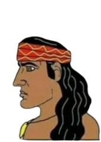

O povo escolhido foram os incas:

Principais pontos econômicos: A economia Inca é baseada no trabalho coletivo adaptado a todas as idades, e seu alicerce era a agricultura.
Aspectos políticos: Eles tinham um governo monárquico e teocrático, em que o imperador, também conhecido como Inca era considerado uma figura suprema, basicamente um deus, e também em leis simples, que valorizavam o trabalho e puniam roubo e ociosidade.
Aspectos culturais: Tinham uma religião politeísta, acreditando em vários deuses, que eram ligados à elementos da natureza, como o sol, a lua o rio e a chuva, também faziam rituais, oferendas e sacrifícios humanos.
Aspectos sociais: A sociedade inca era hierárquica, formando uma pirâmide que havia o Inca/imperador no topo, e tendo grandes diferenças entre classes sociais.
Astronomia: Os povos do antigo Império Inca acreditavam que o deus criador Viracocha tinha criado o sol, a lua e as estrelas.
REFERÊNCIAS:
https://conhecimentocientifico.com/incas-imperio/
https://www.ingressomachupicchu.com/organizacao-do-governo-inca/"
https://www.todamateria.com.br/incas/"
https://www.ingressomachupicchu.com/organizacao-do-governo-inca/"
https://pt.wikipedia.org/wiki/Astronomia_amer%C3%ADndia#:~:text=6%20Liga%C3%A7%C3%B5es%20externas-,Astronomia%20inca,e%20atiradas%20para%20o%20c%C3%A9u)."